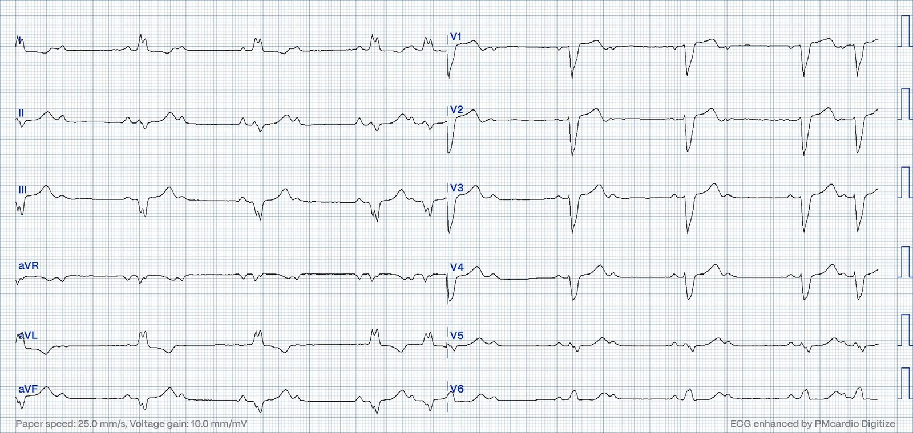
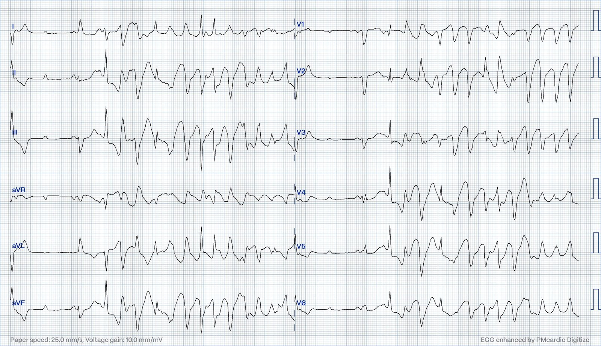
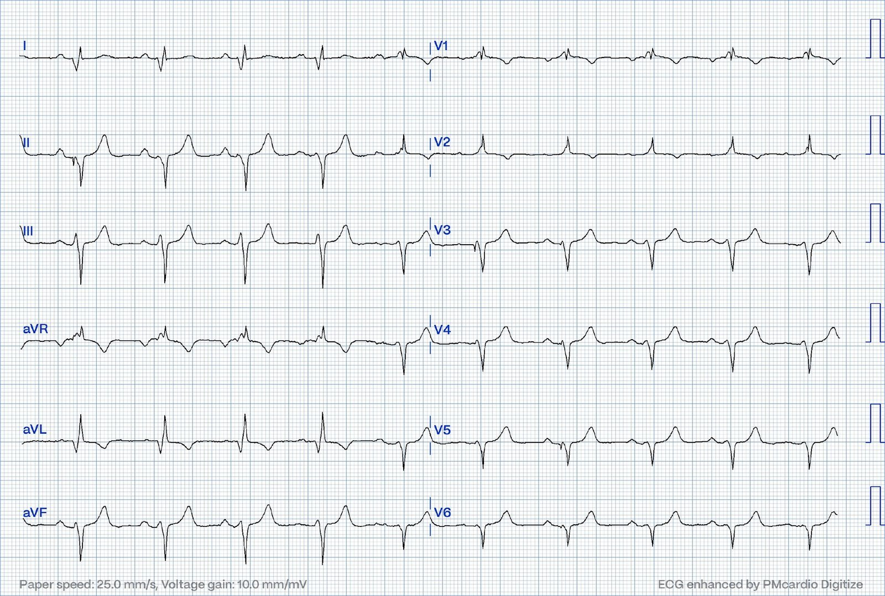
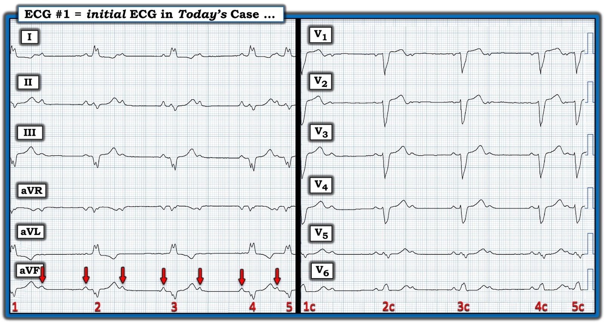
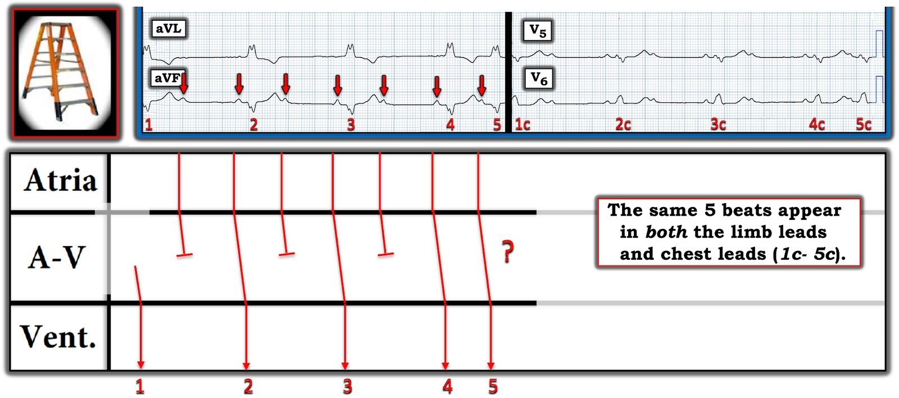
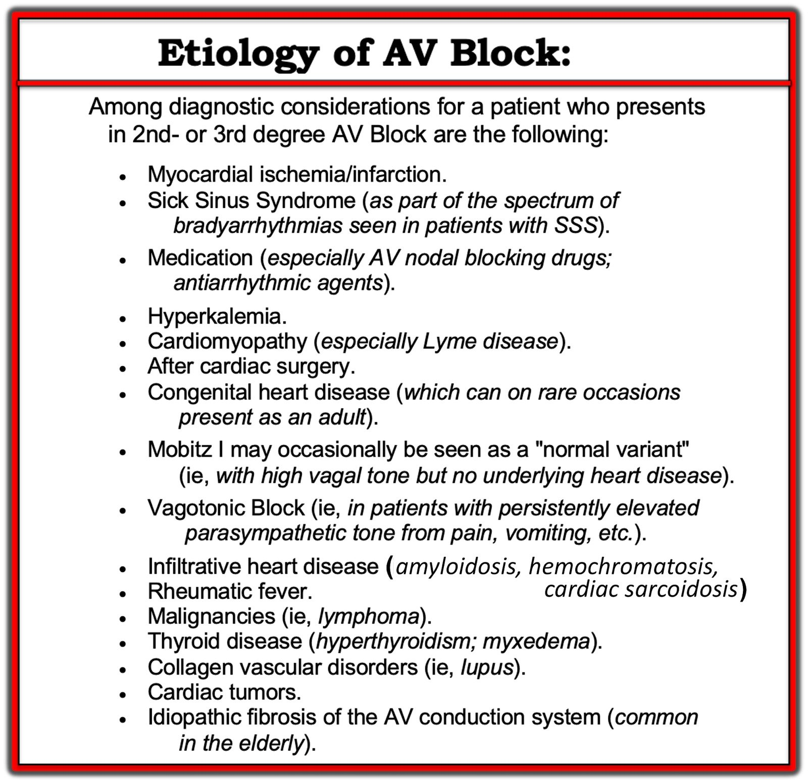

23/01/2024 — Đây là loại blốc AV nào? Và vì sao bệnh nhân bị nhịp nhanh thất?
Bản dịch tiếng Việt của bài "What kind of AV block is this? And why does she develop Ventricular Tachycardia?" – Dr. Smith’s ECG Blog. Giữ nguyên toàn bộ 7 hình ảnh của bản gốc.
Bài này do Magnus Nossen viết
Bệnh nhân nữ, độ tuổi 50. Bà nhập viện vì «chóng mặt» và mệt yếu kéo dài một tuần. Trước bảy ngày gần đây bà vẫn khỏe. Không đau ngực. Bà có thừa nhận khó thở khi gắng sức. Bà không có bệnh tim nào đã biết. Ngoài thừa cân và cholesterol tăng, bà khỏe mạnh. Bà chỉ dùng một thuốc kê đơn duy nhất là statin.
Dưới đây là điện tâm đồ lúc nhập viện của bà. Bạn đọc điện tâm đồ này như thế nào?


Điện tâm đồ trên bất thường rất rõ. Có sóng P xoang trên suốt bản ghi. Nhìn qua đã thấy ngay số sóng P nhiều hơn số phức bộ QRS. Như vậy chắc chắn phải có một dạng blốc nhĩ thất (blốc AV) nào đó. Trong phần lớn bản ghi, cứ hai sóng P thì có một QRS. Có LBBB.
Mỗi khi có blốc AV 2:1 cố định, rất khó xác định blốc AV là do bệnh lý nút AV (blốc AV độ hai loại I, Wenckebach) hay là blốc AV dưới His (infra-Hisian). Mỗi khi gặp blốc AV 2:1 với QRS hẹp, bạn có thể khá yên tâm rằng đó là blốc AV độ hai loại I, và do đó khả năng tiến triển thành blốc AV hoàn toàn mà không có nhịp thoát ổn định là khá thấp.
Tuy nhiên, nếu có blốc AV 2:1 với QRS rộng — nhiều khả năng hơn đó là blốc AV độ hai loại II. Vì sao sự phân biệt này lại quan trọng?
Blốc AV Mobitz loại I do bệnh lý nút AV gây ra. Khoảng PR dài dần cho tới khi một QRS bị rớt, rồi chu kỳ lặp lại. Nếu không có blốc nhánh (BBB) thì QRS sẽ hẹp.
Blốc AV Mobitz loại II thường có cơ chế sinh lý bệnh khác. Trong đa số trường hợp, có sẵn một blốc nhánh hoàn toàn (trái hoặc phải) và một blốc từng lúc ở nhánh còn lại. Điều này dẫn tới những giai đoạn blốc tim hoàn toàn ở dưới hệ His-Purkinje. Nếu có nhịp thoát thì đó sẽ là nhịp thoát thất và rất chậm.
Điện tâm đồ trên cho thấy LBBB. Các sóng P được dẫn truyền có khoảng PR bình thường (gợi ý dẫn truyền AV bình thường). Phần lớn bản ghi là blốc AV 2:1. Có một đoạn ngắn dẫn truyền AV 3:2. Khoảng PR có vẻ như nhau, hoặc ít nhất là không dài ra một cách rõ ràng. Tiếc là không có dải nhịp dài hơn.
Blốc AV Mobitz loại II đã được nghi ngờ. Trong ca này (điện tâm đồ trên), sự hoạt hóa thất phụ thuộc vào việc nhánh phải (RBB) dẫn truyền xung động, vì đã có LBBB vĩnh viễn. RBBB từng lúc gây ra không dẫn truyền, dẫn tới các QRS bị rớt. Nếu RBBB nặng lên và trở nên dai dẳng — thì chỉ còn lại nhịp thoát thất.
Xét nghiệm sinh hóa không có gì đáng chú ý ngoài NT-proBNP tăng nhẹ. Troponin âm tính. Bệnh nhân được nhập viện và theo dõi từ xa (telemetry). Trong 24 giờ tiếp theo, bà có những giai đoạn blốc AV hoàn toàn với nhịp thoát thất tần số 20 mấy nhát/phút. Bà được bắt đầu dùng isoprenalin (isoproterenol).
Ngay sau khi bắt đầu truyền isoprenalin, xuất hiện những loạt nhịp nhanh thất (VT) ngắn. Điện tâm đồ sau đây được ghi trong một trong các cơn VT này.


Điện tâm đồ trên lúc đầu cho thấy blốc AV. Tiếp theo là một loạt VT đa dạng, rất nhanh và không đều. Isoprenalin được ngừng, và bệnh nhân được đặt máy tạo nhịp tạm thời qua đường tĩnh mạch. Bệnh nhân ổn định sau khi đặt máy tạo nhịp.
Bàn luận: Điện tâm đồ ban đầu trong ca hôm nay là bệnh lý với bất kỳ bệnh nhân nào, nhất là với một phụ nữ 50 tuổi trước đó khỏe mạnh. Bất thường lan rộng của hệ dẫn truyền có thể do nhiều nguyên nhân (thiếu máu cục bộ, di truyền, nhiễm trùng, amyloid, v.v.). Thường thì tiền sử bệnh sẽ cho manh mối về nguyên nhân.
Mặc dù nghi ngờ hàng đầu không phải là bệnh tim thiếu máu cục bộ, bệnh nhân vẫn được chụp CT mạch vành, và kết quả cho thấy động mạch vành bình thường. Điều này loại trừ bệnh mạch vành là nguyên nhân gây bệnh hệ dẫn truyền. Khi đánh giá bệnh nhân có rối loạn dẫn truyền mức độ cao khởi phát sớm và rối loạn nhịp nhanh thất mà không có bệnh mạch vành — sarcoidosis tim nên nằm trong danh sách chẩn đoán phân biệt.
Bệnh nhân được chụp MRI và PET tim. Dưới đây là các video PET cho thấy những vùng tăng chuyển hóa/tăng hấp thu trong cơ tim, phù hợp với sarcoidosis tim.
Bệnh nhân được chuyển tới một cơ sở khác để sinh thiết tim. Kết quả sinh thiết phù hợp với sarcoidosis tim. Bệnh nhân được bắt đầu điều trị nội khoa bằng corticosteroid đường uống và methotrexate. Bà được cấy CRT-D (máy điều trị tái đồng bộ tim kèm khử rung — Cardiac Resynchronization Therapy-Defibrillator). Điện tâm đồ dưới đây được ghi sau khi cấy thiết bị. Điện tâm đồ cho thấy nhận cảm nhĩ và nhịp tạo nhịp hai thất (biventricular). Các phức bộ QRS khá hẹp do cả hai thất được tạo nhịp một cách đồng bộ.


Về sarcoidosis: Sarcoidosis là một bệnh u hạt đa hệ thống. Tổn thương phổi là biểu hiện điển hình. Sarcoidosis tim (CS) gặp ở ~10% bệnh nhân sarcoidosis. Viêm u hạt ảnh hưởng tới tim, gây bệnh cơ tim thâm nhiễm
Biểu hiện thường gặp nhất của sarcoidosis tim là blốc nhĩ thất (AV) và rối loạn nhịp nhanh thất (VT). Blốc AV là biểu hiện đầu tiên của CS ở hơn 30% bệnh nhân. VT là rối loạn nhịp khởi phát thường gặp thứ hai. Đột tử do tim (SCD) trong bệnh tim do sarcoid được cho là do blốc AV mức độ cao hoặc do VT.
- Sarcoidosis tim thường đi kèm sarcoidosis phổi, nhưng có thể là một dấu hiệu đơn độc mà không có tổn thương cơ quan khác. Hãy nghĩ tới khả năng này khi bạn gặp rối loạn dẫn truyền ở một bệnh nhân «trẻ tuổi hơn»
- Blốc AV 2:1 có thể là một thách thức chẩn đoán. Nhìn chung, blốc AV QRS rộng nguy hiểm hơn blốc AV QRS hẹp, vốn có nhiều khả năng có nhịp thoát ổn định hơn.
- Thuốc vận mạch hay thuốc tăng co bóp không phải là vô hại, và có thể thúc đẩy các rối loạn nhịp đe dọa tính mạng.
Những điểm cần học:

===================================
BÌNH LUẬN CỦA TÔI, bởi KEN GRAUER, MD (23/1/2024):
===================================
Ca hôm nay của Dr. Nossen khác với những ca blốc AV khác mà chúng tôi đã đăng qua nhiều năm trên Dr. Smith’s ECG Blog — ở chỗ nguyên nhân gây blốc AV hóa ra là CS (sarcoidosis tim — Cardiac Sarcoidosis).
- Phần lớn các ca blốc AV chúng ta gặp trong thực hành là hậu quả của bệnh tim nền. Tuy vậy — điều quan trọng là phải biết tới các nguyên nhân tiềm tàng khác mà nhân viên y tế cấp cứu thỉnh thoảng sẽ gặp (Xem Hình 3 trong PHẦN BỔ SUNG bên dưới để có DANH SÁCH các nguyên nhân tiềm tàng gây blốc AV).
Lý do thứ 2 khiến tôi thấy ca hôm nay đặc biệt thú vị — là thách thức mà điện tâm đồ ban đầu đặt ra. Cho rõ ràng, trong Hình 1 — tôi đã chép lại bản ghi ban đầu này.
- Quyết định MẤU CHỐT cần đưa ra khi đọc điện tâm đồ #1 — là xác định loại blốc AV độ 2 đang có mặt?


SUY NGHĨ CỦA TÔI về điện tâm đồ trong Hình 1:
Điện tâm đồ ban đầu hôm nay rất có giá trị giảng dạy. Tôi xin nêu bật các điểm sau:
- Không có dải nhịp chuyển đạo dài. Thay vào đó, chúng ta chỉ có một dải nhịp 5.5 giây với chỉ 5 nhát! Điều quan trọng cần nhận ra là chúng ta thấy cùng 5 nhát đó ở cả chuyển đạo chi lẫn chuyển đạo trước ngực (tức là, các nhát 1,2,3,4,5 ở chuyển đạo chi chính là các nhát 1c,2c,3c,4c,5c ở chuyển đạo trước ngực (chest leads)).
- Xin nhấn mạnh: Không thể xác định chắc chắn loại blốc AV từ một dải nhịp rút gọn dài dưới 6 giây, chỉ chứa tổng cộng 5 nhát. Tuy vậy (như Dr. Nossen đã nói) — chúng ta có thể đánh giá dải nhịp ngắn mà mình có, và dự đoán khả năng lâm sàng của nguyên nhân nhịp.
- Để làm vậy — tôi đã đánh dấu các sóng P xoang bằng mũi tên ĐỎ. Như Dr. Nossen đã nêu — số sóng P nhiều hơn số phức bộ QRS, điều này xác định nhịp này là một dạng blốc AV độ 2.
- Ngay cả khi không có compa đo (calipers) — cũng phải thấy rõ rằng nhịp nhĩ không đều! Với blốc AV độ 2 và độ 3, thường gặp loạn nhịp xoang “theo pha thất” (ventriculophasic) . Thông thường, với loạn nhịp xoang theo pha thất — các khoảng P-P “kẹp” phức bộ QRS ở giữa có xu hướng ngắn hơn những khoảng P-P không chứa QRS ở giữa. Lý do sinh lý của hiện tượng này — được cho là do tuần hoàn tăng thoáng qua nhờ co bóp cơ học sinh ra từ phức bộ QRS “bị kẹp ở giữa”.
- Phức bộ QRS trong điện tâm đồ #1 rộng. Hình dạng QRS phù hợp với LBBB (blốc nhánh trái — Left Bundle Branch Block) — ở chỗ các phức bộ QRS đều dương hoàn toàn ở các chuyển đạo bên I,aVL,V6 — và QRS chủ yếu âm ở các chuyển đạo trước tim cho tới chuyển đạo bên V6.
- Có dẫn truyền một số phức bộ LBBB này — vì khoảng PR đứng trước các nhát #2,3,4 hằng định, đồng thời bình thường (tức là, không quá 0.20 giây).
- Sóng ST-T đi kèm dẫn truyền LBBB không gợi ý OMI cấp. Tuy vậy — ít nhất cũng có một số bất thường sóng ST-T không đặc hiệu dưới dạng ST thẳng đuỗn, vượt quá mức chờ đợi ở dẫn truyền LBBB đơn thuần (tức là, ở các chuyển đạo II,III,aVF; và ở các chuyển đạo V5,V6).
- Nhịp thất khá (nhưng không hoàn toàn) đều ở 4 nhát đầu. Lý do của sự không đều nhẹ này đơn giản là do loạn nhịp xoang theo pha thất nền.
- Nhát #5 đến sớm hơn dự kiến — và có sóng P đi trước. Xác định khoảng PR trước nhát #5 là MẤU CHỐT để phân biệt giữa blốc AV dạng Mobitz I với Mobitz II — vì NẾU khoảng PR trước nhát #5 dài ra so với khoảng PR trước nhát #4 — thì điều này gợi ý loại blốc AV là Mobitz I ( = Wenckebach AV).
CẢNH BÁO và ĐIỂM THEN CHỐT: Tiếc là sóng P trước nhát #5 xuất hiện trước khi sóng T đi trước kết thúc. Vì vậy — chúng ta không thấy rõ điểm khởi đầu của sóng P này. Điều này khiến khó xác định liệu khoảng PR trước nhát #5 có dài hơn một chút so với khoảng PR trước nhát #4 hay không.
- ĐIỂM THEN CHỐT (PEARL) #1: Có 3 loại blốc AV độ 2. Đó là: i) Mobitz I ( = Wenckebach AV) — trong đó khoảng PR tăng dần cho đến khi một nhát bị rớt; ii) Mobitz II — trong đó khoảng PR không đổi, cho đến khi một hoặc nhiều nhát liên tiếp không được dẫn truyền; — và, iii) blốc AV 2:1 — với loại này thì không thể chắc chắn loại blốc độ 2 là Mobitz I hay Mobitz II, vì chúng ta không bao giờ thấy 2 phức bộ QRS liên tiếp được dẫn truyền với cùng một khoảng PR. Chính vì lý do này mà việc xác định chính xác khoảng PR trước nhát #5 lại quan trọng đến vậy đối với ý nghĩa lâm sàng của ca hôm nay.
- ĐIỂM THEN CHỐT #2: Rất hiếm khi loại blốc AV luân phiên giữa Mobitz I và Mobitz II. Vì vậy, khi nhịp chủ đạo là blốc AV độ 2 với dẫn truyền AV 2:1 — NẾU ở những thời điểm khác trong quá trình theo dõi monitor tim cho bệnh nhân bạn thỉnh thoảng thấy dấu hiệu rõ ràng của Mobitz I (tức là, khoảng PR dài dần ra trước nhát bị rớt) — thì rất có khả năng những giai đoạn blốc 2:1 đó phản ánh Mobitz I chứ không phải Mobitz II.
- ĐIỂM THEN CHỐT #3: Như BS. Nossen đã nêu — lý do việc phân biệt Mobitz I với Mobitz II quan trọng — là vì NẾU nhịp là Mobitz II — thì cần tạo nhịp (vì tỷ lệ tiến triển thành blốc AV hoàn toàn cao hơn nhiều so với Mobitz I — và blốc AV hoàn toàn khởi phát ở Mobitz II thường rất đột ngột!). Lý do sinh lý khiến Mobitz II nhiều khả năng cần tạo nhịp hơn hẳn — là vì khiếm khuyết dẫn truyền này xảy ra ở tầng thấp hơn trong hệ thống dẫn truyền (tức là, dưới nút AV) — do đó hàm ý một nhịp nội tại chậm hơn và kém tin cậy hơn nhiều.
- ĐIỂM THEN CHỐT #4: Mặc dù không thể biết chắc chắn loại blốc AV độ 2 trong ca hôm nay từ bản ghi ngắn 5 nhát mà chúng ta có — một số đặc điểm lâm sàng có thể giúp dự đoán khả năng lâm sàng là Mobitz I hay Mobitz II khi có blốc AV 2:1. Các đặc điểm lâm sàng này gồm: i) Độ rộng QRS (Như đã nêu — Mobitz II xảy ra ở tầng thấp hơn trong hệ thống dẫn truyền — do đó thường đi kèm QRS giãn rộng và một khiếm khuyết dẫn truyền trong thất); ii) Thống kê (Theo kinh nghiệm của tôi khi tìm kiếm mọi trường hợp blốc AV mà tôi có thể tìm được trong hơn 40 năm sự nghiệp vừa qua — hơn hẳn 95% tất cả các blốc AV độ 2 mà tôi đã gặp là Mobitz I, đến mức “bộ sưu tập” bản ghi Mobitz II của tôi vẫn còn hạn chế, so với hàng trăm bản ghi Mobitz I); iii) Khoảng PR (Dấu hiệu khoảng PR kéo dài ở các nhát được dẫn truyền gặp nhiều hơn hẳn ở blốc AV Mobitz I); — và, iv) Liên quan với nhồi máu cơ tim cấp hoặc mới xảy ra (Mobitz I thường đi kèm nhồi máu cơ tim thành dưới — trong khi Mobitz II hay gặp hơn với nhồi máu cơ tim thành trước).
- CẢNH BÁO cho ĐIỂM THEN CHỐT #4: Mặc dù phức bộ QRS thường hẹp nhất ở blốc AV độ 2 Mobitz I — nó có thể rộng nếu có BBB có từ trước. Và, mặc dù QRS thường rộng nhất ở Mobitz II — đôi khi nó có thể hẹp.
GIẢN ĐỒ BẬC THANG (LADDERGRAM) của nhịp hôm nay:
Để rõ ràng, trong Hình 2 — tôi đã vẽ một giản đồ bậc thang (laddergram) cho nhịp 5 nhát trên điện tâm đồ ban đầu hôm nay.
- Như đã mô tả ở trên — có blốc 2:1 ở 3 nhát đầu.
- Nhát #5 [người dịch: nguyên văn ghi “Beat #4”, nhiều khả năng là lỗi đánh máy] xuất hiện sớm hơn dự kiến. Theo những gì tôi có thể nhận định tốt nhất — khoảng PR trước nhát #5 không tăng so với khoảng PR trước nhát #4. Dù vậy — NẾU tôi ở “cạnh giường bệnh” — tôi sẽ chưa vội kết luận về loại blốc AV độ 2 hiện diện cho đến khi tôi thấy một giai đoạn theo dõi dài hơn (đây là lý do cho dấu chấm hỏi mà tôi đặt ở Tầng Nút AV sau nhát #5).


Tổng Hợp Lại Tất cả:
Như đã nêu ở trên — có loạn nhịp xoang theo pha thất (ventriculophasic) trên điện tâm đồ ban đầu hôm nay, trong đó có một dạng blốc AV độ 2 nào đó.
- Dù hoàn toàn thừa nhận rằng cần một giai đoạn theo dõi dài hơn — tôi đồng ý với BS. Nossen rằng blốc AV này nhiều khả năng nhất là Mobitz II vì: i) QRS rộng (tức là, có LBBB); ii) Theo những gì tôi có thể nhận định tốt nhất ở Hình 2 — khoảng PR không tăng qua các nhát được dẫn truyền liên tiếp (dù sóng T của nhát #4 “che khuất” tầm nhìn của chúng ta về điểm khởi đầu thực sự của sóng P trước nhát #5); — và, iii) Diễn tiến lâm sàng của ca hôm nay phù hợp nhất với blốc AV Mobitz II — vì bệnh nhân sau đó đã tiến triển thành blốc AV hoàn toàn, cũng như một loạt VT (cả hai rối loạn nhịp này đều là biến chứng thường gặp của sarcoidosis tim [Hussain và Shetty — StatPearls, 2023 — và — Sink và cs. — JAHA 12:e028342, 2023] ).
=======================================
PHẦN BỔ SUNG:
Có nhiều nguyên nhân tiềm tàng gây blốc AV. Mặc dù ở người lớn thường gặp nhất là liên quan đến bệnh tim thiếu máu cục bộ (tức là, do nhồi máu mới xảy ra) — hoặc ở người cao tuổi là do xơ hóa hay vôi hóa hệ thống dẫn truyền nhĩ thất — vẫn có nhiều Nguyên nhân Tiềm tàng khác gây blốc AV ở người lớn, cũng như ở lứa tuổi nhi khoa (Hình 3).
- Điểm MẤU CHỐT: Vì một số nguyên nhân gây blốc AV trong Hình 3 có thể điều trị được và/hoặc tự hết theo thời gian — việc tìm kiếm nguyên nhân là thiết yếu. Ví dụ — nhịp chậm và rối loạn dẫn truyền AV không hiếm gặp khi tăng kali máu, và các rối loạn dẫn truyền này thường hết khi K+ huyết thanh được điều chỉnh.
- Dù ca hôm nay là ca đầu tiên chúng tôi đăng về sarcoidosis tim — chúng tôi đã từng giới thiệu bệnh cơ tim thâm nhiễm (tức là, với amyloidosis — trong bài ngày 15 tháng Mười Một năm 2020 trên Dr. Smith’s ECG Blog).
- LƯU Ý: Chỉ định tạo nhịp vĩnh viễn ở bệnh nhân trẻ tuổi là khác! Một số bệnh nhân vẫn sinh hoạt tốt đến bất ngờ trong thời gian dài dù có một mức độ blốc AV nào đó. Do đó — người ta tìm kiếm một “cân bằng tối ưu” giữa nhu cầu tạo nhịp tức thời với khả năng máy tạo nhịp trục trặc theo thời gian (và cuối cùng sẽ cần thay máy tạo nhịp).
- T.B. (P.S.): Với những ai quan tâm đến thêm các ví dụ về blốc AV (bao gồm minh họa bằng giản đồ bậc thang) — Vui lòng xem Bình luận của tôi ở cuối trang trong bài ngày 16 tháng Năm năm 2020 — bài ngày 25 tháng Mười năm 2021 và — bài ngày 30 tháng Bảy năm 2023 — và, bài ngày 6 tháng Tư năm 2023).

